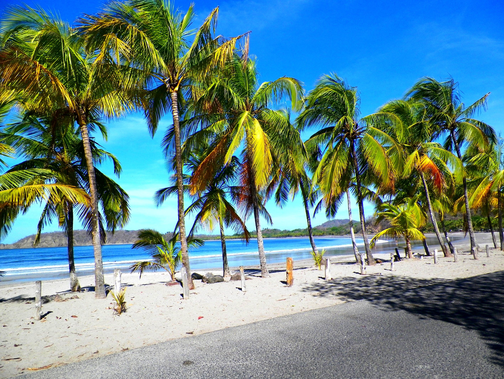
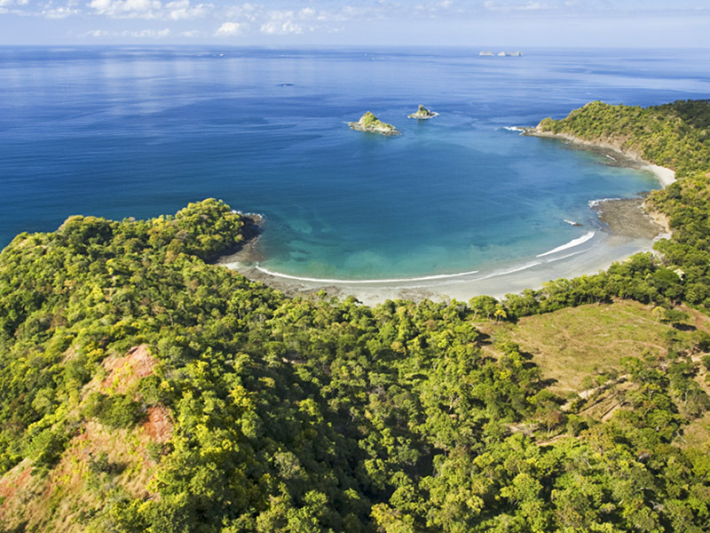
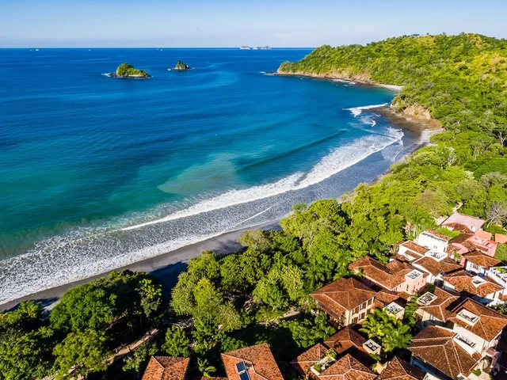
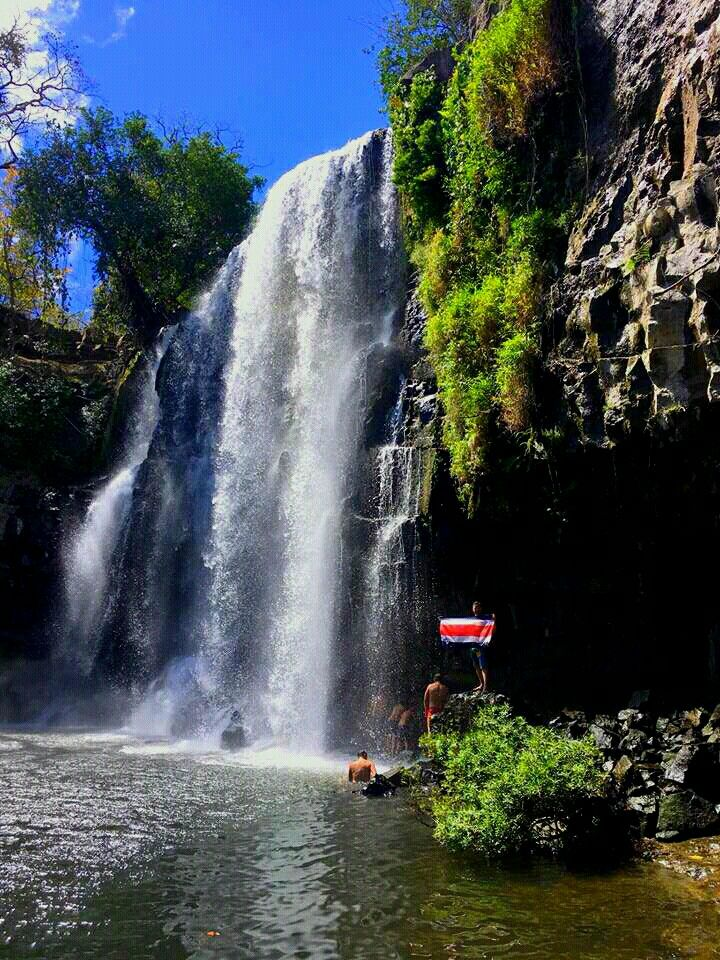

Nestled amidst lush greenery and rocky terrain, this hidden gem
offers a tranquil spot for visitors to relax and unwind
Location

Carrillo Beach
Playa Carrillo is a stunning and secluded beach located on the
Nicoya Peninsula in Guanacaste, Costa Rica.
Known for its pristine white sand, clear turquoise waters, and
lush surrounding vegetation, Playa Carrillo offers a tranquil and
picturesque escape.
Location

Danta Beach
Playa Danta provides a wonderful setting for relaxation and
water-based activities.
The beach's pristine and unspoiled environment makes it a favorite
spot for sunbathing, swimming, snorkeling, and stand-up
paddleboarding.
Location

Catalinas
Situated along the Pacific Ocean, this charming community is known
for its thoughtful design, pedestrian-friendly layout, and
stunning natural surroundings
Las Catalinas offers a mix of cobblestone streets, colorful
buildings, and lush green spaces, creating a picturesque and
welcoming atmosphere.
Location

LLanos de cortes Water Falls
This waterfall is a hidden gem nestled within the tropical forest,
featuring a picturesque cascade that tumbles into a tranquil pool